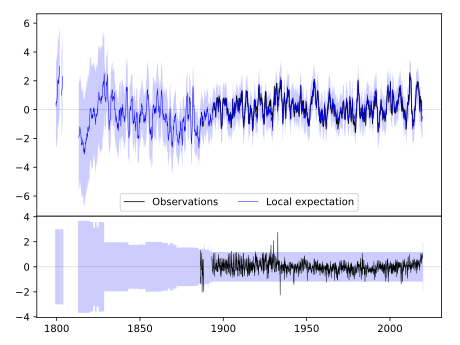
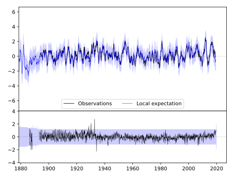
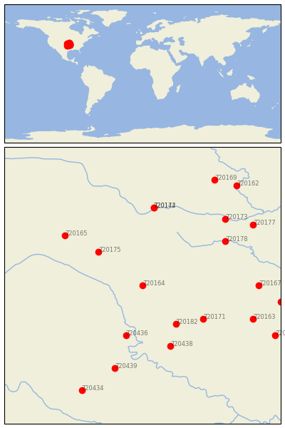

EL DORADO [USA]


| Neighbour | Name | Country | Distance | Lon/Lat | Years |
|---|
| 720164 | EL DORADO | USA | 0 | -96.8, 37.8 | 1886-2019 |
| 720182 | SEDAN | USA | 94 | -96.2, 37.1 | 1885-2019 |
| 720175 | MCPHERSON | USA | 96 | -97.6, 38.4 | 1891-2019 |
| 720436 | NEWKIRK 1NW | USA | 103 | -97.1, 36.9 | 1893-2019 |
| 720171 | INDEPENDENCE | USA | 117 | -95.7, 37.2 | 1872-2019 |
| 720438 | PAWHUSKA | USA | 130 | -96.3, 36.7 | 1893-2019 |
| 720142 | MANHATTAN D.Burnette | USA | 156 | -96.6, 39.2 | 1828-2019 |
| 720174 | MANHATTAN | USA | 156 | -96.6, 39.2 | 1891-2019 |
| 720165 | ELLSWORTH | USA | 157 | -98.2, 38.7 | 1866-2019 |
| 720178 | OTTAWA | USA | 158 | -95.3, 38.6 | 1893-2019 |
| 720439 | PERRY | USA | 172 | -97.3, 36.3 | 1893-2019 |
| 720167 | FT SCOTT | USA | 184 | -94.7, 37.8 | 1843-2019 |
| 720173 | LAWRENCE | USA | 186 | -95.3, 39.0 | 1868-2019 |
| 720163 | COLUMBUS | USA | 188 | -94.8, 37.2 | 1891-2019 |
| 720177 | OLATHE 3E | USA | 213 | -94.8, 38.9 | 1864-2019 |
| 720293 | LAMAR | USA | 222 | -94.3, 37.5 | 1885-2019 |
| 720434 | KINGFISHER | USA | 232 | -97.9, 35.9 | 1893-2019 |
| 720299 | NEOSHO | USA | 234 | -94.4, 36.9 | 1878-2019 |
| 720169 | HORTON | USA | 239 | -95.5, 39.7 | 1888-2019 |
| 720162 | ATCHISON | USA | 248 | -95.1, 39.6 | 1865-2019 |